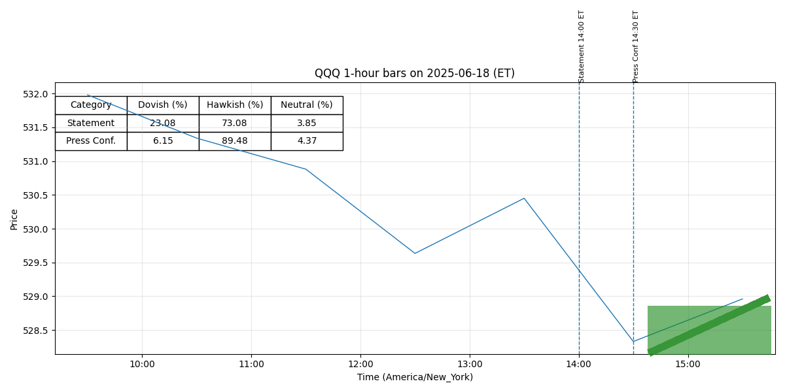

For release at 2:00 p.m. EDT June 18, 2025 Although swings in net exports have affected the data, recent indicators suggest that economic activity has continued to expand at a solid pace. (0.409)
The unemployment rate remains low, and labor market conditions remain solid. (0.402)
Inflation remains somewhat elevated. (0.551)
Uncertainty about the economic outlook has diminished but remains elevated. (0.437)
The Committee is attentive to the risks to both sides of its dual mandate. (0.602)
The Committee’s assessments will take into account a wide range of information, including readings on labor market conditions, inflation pressures and inflation expectations, and financial and international developments. (0.536)
(more) -2- Voting for the monetary policy action were Jerome H. Powell, Chair; John C. Williams, Vice Chair; Michael S. Barr; Michelle W. Bowman; Susan M. Collins; Lisa D. Cook; Austan D. Goolsbee; Philip N. Jefferson; Adriana D. Kugler; Alberto G. Musalem; Jeffrey R. Schmid; and Christopher J. Waller. (0.804)
For release at 2:00 p.m. EDT June 18, 2025 Decisions Regarding Monetary Policy Implementation The Federal Reserve has made the following decisions to implement the monetary policy stance announced by the Federal Open Market Committee in its statement on June 18, 2025: • The Board of Governors of the Federal Reserve System voted unanimously to maintain the interest rate paid on reserve balances at 4.4 percent, effective June 20, 2025. (0.513)
• As part of its policy decision, the Federal Open Market Committee voted to direct the Open Market Desk at the Federal Reserve Bank of New York, until instructed otherwise, to execute transactions in the System Open Market Account in accordance with the following domestic policy directive: "Effective June 20, 2025, the Federal Open Market Committee directs the Desk to: (0.518)
o Conduct standing overnight repurchase agreement operations with a minimum bid rate of 4.5 percent and with an aggregate operation limit of $500 billion. (0.728)
o Conduct standing overnight reverse repurchase agreement operations at an offering rate of 4.25 percent and with a per-counterparty limit of $160 billion per day. (0.756)
o Roll over at auction the amount of principal payments from the Federal Reserve's holdings of Treasury securities maturing in each calendar month that exceeds a cap of $5 billion per month. (0.513)
o Reinvest the amount of principal payments from the Federal Reserve's holdings of agency debt and agency mortgage-backed securities (MBS) received in each calendar month that exceeds a cap of $35 billion per month into Treasury securities to roughly match the maturity composition of Treasury securities outstanding. (0.545)
o Allow modest deviations from stated amounts for reinvestments, if needed for operational reasons."" (0.765)
For release at 2:00 p.m. EDT May 7, 2025
Although swings in net exports have affected the data, recent indicators suggest that
economic activity has continued to expand at a solid pace. (0.408)
The unemployment rate has stabilized
at a low level in recent months, and labor market conditions remain solid. (0.429)
Inflation remains
somewhat elevated. (0.551)
Uncertainty about the economic outlook has increased further. (0.402)
The
Committee is attentive to the risks to both sides of its dual mandate and judges that the risks of
higher unemployment and higher inflation have risen. (0.356)
The Committee’s assessments will take
(more)
-2-
into account a wide range of information, including readings on labor market conditions,
inflation pressures and inflation expectations, and financial and international developments. (0.548)
Voting for the monetary policy action were Jerome H. Powell, Chair; John C. Williams,
Vice Chair; Michael S. Barr; Michelle W. Bowman; Susan M. Collins; Lisa D. Cook; Austan D.
Goolsbee; Philip N. Jefferson; Neel Kashkari; Adriana D. Kugler; Alberto G. Musalem; and
Christopher J. Waller. (0.789)
Neel Kashkari voted as an alternate member at this meeting. (0.536)
For release at 2:00 p.m. EDT May 7, 2025
Decisions Regarding Monetary Policy Implementation
The Federal Reserve has made the following decisions to implement the monetary policy stance
announced by the Federal Open Market Committee in its statement on May 7, 2025:
• The Board of Governors of the Federal Reserve System voted unanimously to maintain the
interest rate paid on reserve balances at 4.4 percent, effective May 8, 2025. (0.505)
• As part of its policy decision, the Federal Open Market Committee voted to direct the Open
Market Desk at the Federal Reserve Bank of New York, until instructed otherwise, to
execute transactions in the System Open Market Account in accordance with the following
domestic policy directive:
"Effective May 8, 2025, the Federal Open Market Committee directs the Desk to: (0.515)
Conduct standing overnight repurchase agreement operations with a minimum bid
o
rate of 4.5 percent and with an aggregate operation limit of $500 billion. (0.722)
Conduct standing overnight reverse repurchase agreement operations at an
o
offering rate of 4.25 percent and with a per-counterparty limit of $160 billion per
day. (0.757)
Roll over at auction the amount of principal payments from the Federal Reserve's
o
holdings of Treasury securities maturing in each calendar month that exceeds a
cap of $5 billion per month. (0.514)
Reinvest the amount of principal payments from the Federal Reserve's holdings of
o
agency debt and agency mortgage-backed securities (MBS) received in each
calendar month that exceeds a cap of $35 billion per month into Treasury
securities to roughly match the maturity composition of Treasury securities
outstanding. (0.536)
Allow modest deviations from stated amounts for reinvestments, if needed for
o
operational reasons."" (0.774)